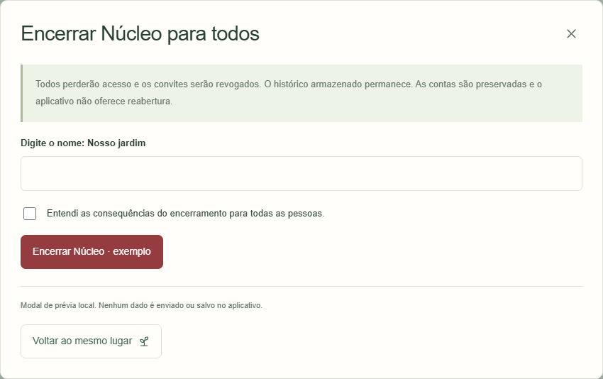
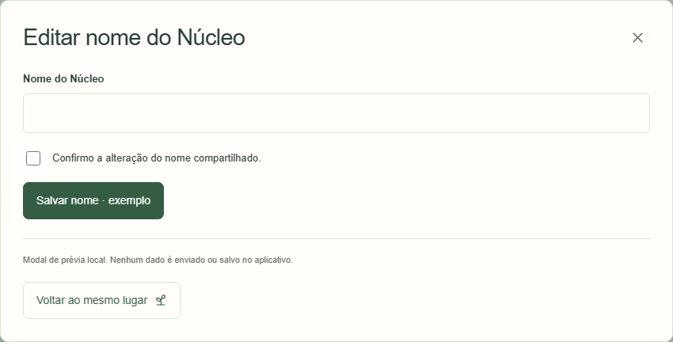
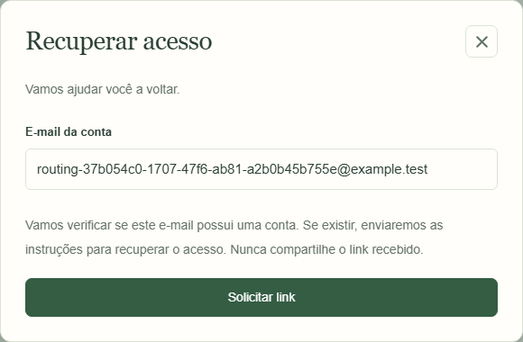
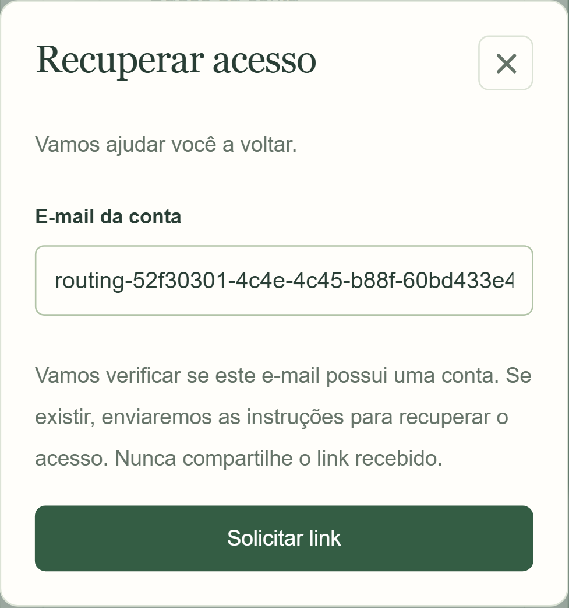

03/11/2026 · Telas01 (acesso),13 (identidade),66 (Conta). O padrão também cobre notificações, Mais e novos diálogos nativos. Antes Atlas capturado antes de alterar seu comportamento. Composição visual preservada; a diferença é o fechamento externo. Antes do aplicativo: referência histórica na galeria3.6.0; nenhuma captura nova anterior do aplicativo foi fabricada.
Aplicativo Chromium, Supabase local com contas descartáveis; desktop1280×720 e mobile393×727 CSS. Atlas em molduras desktop/mobile com ferramenta1600×1200. Abrir e clicar no padding mantém modal; clicar/tocar fora fecha, devolvendo foco; arraste iniciado dentro não fecha. Diagramas futuros/aninhados testados separadamente. Não certifica aparelho físico/Safari ou produção. Regras próprias de reset/cancelamento permanecem.



